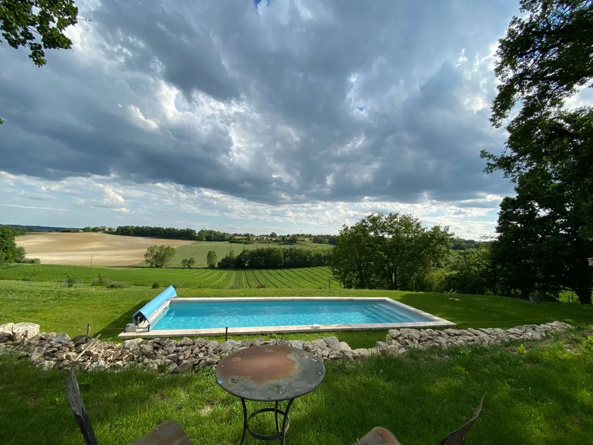
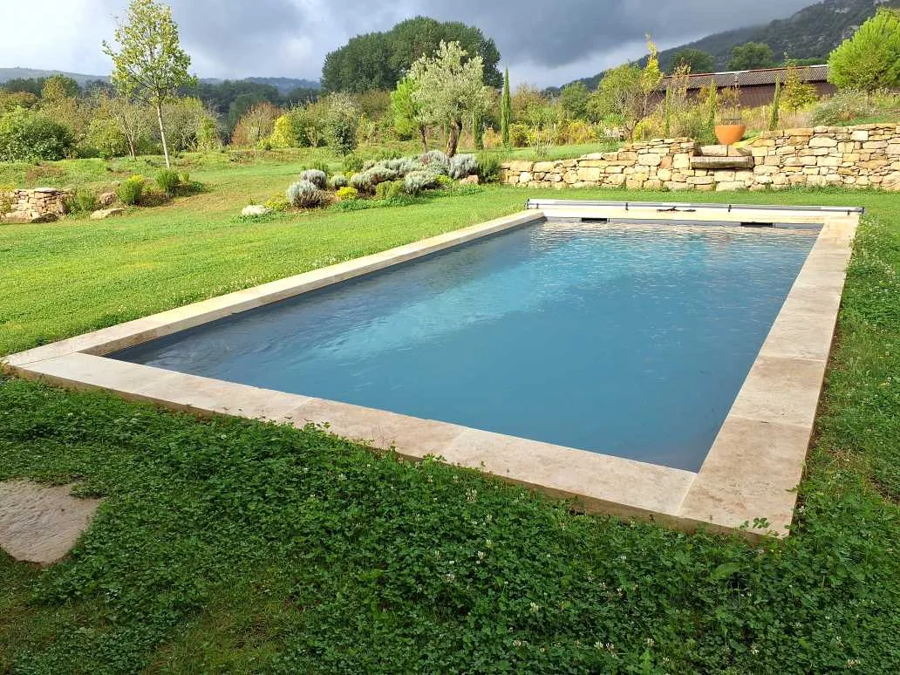
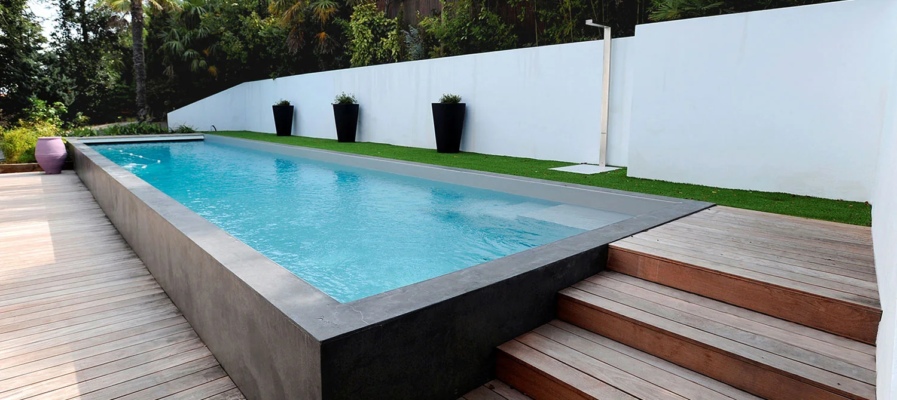
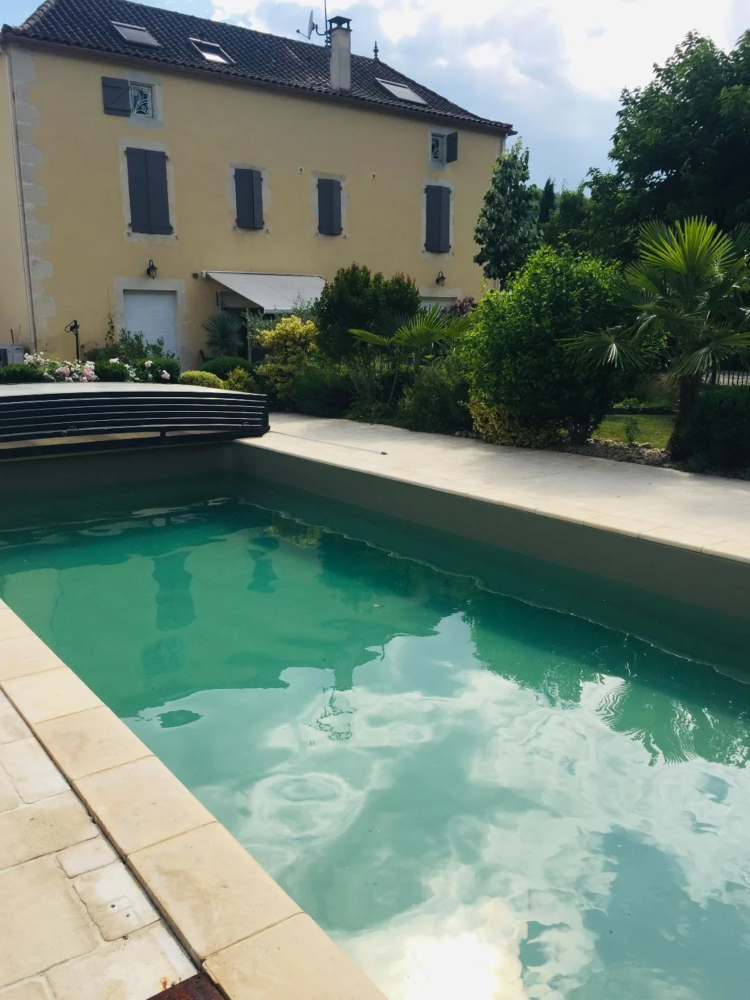
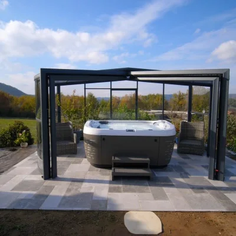

Trouvez le style de piscine qui correspond au lieu.
Le site Delpech présente plusieurs familles de bassins : miroir, débordement, paysage, couloir de nage, petites piscines, intérieur, verre, spa et piscines traditionnelles. Cette version permet désormais d’entrer dans chaque univers sur une page dédiée.
Plus qu’une forme : une manière d’habiter le jardin.
Chaque page ci-dessous développe les usages, l’intégration au terrain et plusieurs exemples visuels afin de mieux se projeter avant le premier rendez-vous.

Piscine miroir
Une ligne d’eau affleurante et des reflets qui effacent presque les limites du bassin.
Découvrir ↗
À débordement
Pour prolonger la perspective lorsque le terrain s’ouvre sur une vue ou un relief.
Découvrir ↗
Piscine paysage
Le bassin se fond dans les matériaux, la végétation et l’architecture existante.
Découvrir ↗
Couloir de nage
Une ligne longue et étroite, pensée autant pour la nage que pour la perspective.
Découvrir ↗
Petites piscines
Le sur-mesure devient essentiel quand chaque mètre carré compte.
Découvrir ↗
Intérieur, verre & spa
Des projets plus spécifiques pour profiter de l’eau autrement, toute l’année.
Découvrir ↗